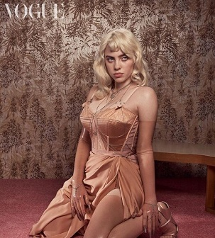

Billie en la portada de Vogue
Cantante y compositora estadounidense. Billie Eilish Pirate Baird O'Connell (Los Ángeles, California; 18 de diciembre de 2001) es una cantante y compositora estadounidense. Adquirió fama como artista cuando tenía 13 años, a raíz del sencillo «Ocean Eyes» que se publicó en 2015 en SoundCloud y volvió a lanzarse con un vídeo musical en YouTube en 2016, a la edad de 14 años, lo que la convirtió en un fenómeno viral.
Link VogueBillie

10) Therefore I Am - 125 millones de visitas. 9) All The Good Girls Go To Hell - 174 millones de visitas. 8) Everything I Wanted - 201 millones de visitas. 7) You Should See Me In A Crown (Vertical Video) - 225 millones de visitas. 6) Idontwannabeyouanymore (Video Vertical) - 254 millones de visitas. 5) Ocean Eyes - 336 millones de visitas. 4) Bury A Friend - 394 millones de visitas. 3) When The Party's Over - 663 millones de visitas. 2) Bad Guy - 1.053 millones de visitas. 1) Lovely - 1.061 millones de visitas.
Más info